←
12345678910111213
→
Neck finishing, Fingerboard fitting and staining the instrument.
- 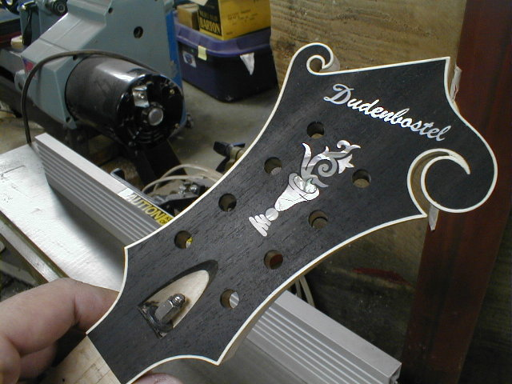
- 120) The filler has cured and is sanded to expose the inlay.
- 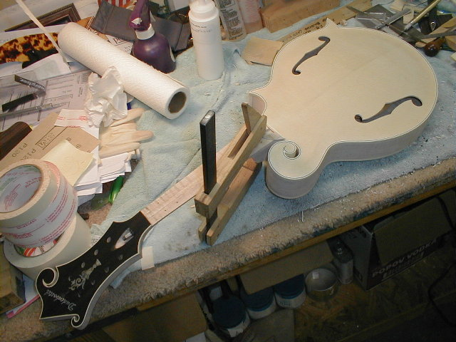
- 121) A little cleanup around the heel area of the neck, and it's time to glue the neck and body together. The alignment of the neck to the body is checked one last time to assure everything is just right before the glue is applied.
- 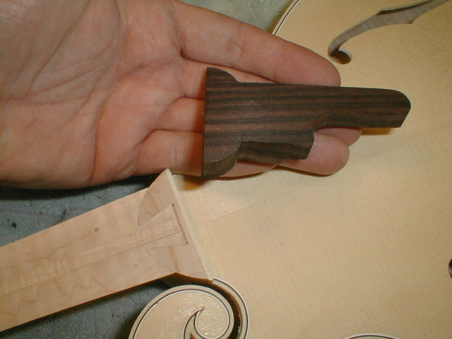
- 122) Some Loars featured and Macassar ebony fingerboard extension. Here's I've completed the extension and will glue it in place. After the glue is dry, I'll take a long sanding board and level it to the same plane as the fingerboard. Before gluing it on, I get it as close as possible to the proper angle and height by sanding the bottom of it on a belt sander.
- 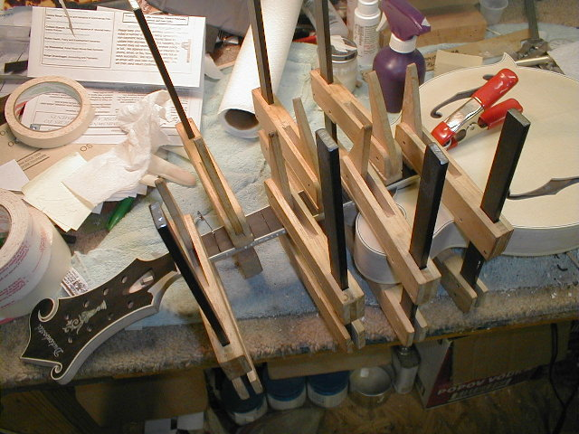
- 123) After the extension is glued on, the fingerboard is located with the two pins
(previously holes were drilled thru the bottom of a couple of fret slots into the neck) and the fingerboard is glued on.
- 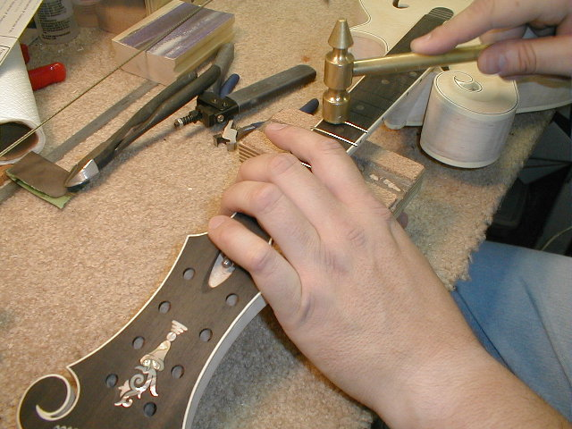
- 124) I prefer to fret the mandolins before finishing. The finish is a little tender when they are new and I prefer beating and banging on them before it is applied.

- 125) Mike Compton stopped by last Sat. for a visit. We played a little "Monroe air mandolin". He took the lead, I played harmony.
- 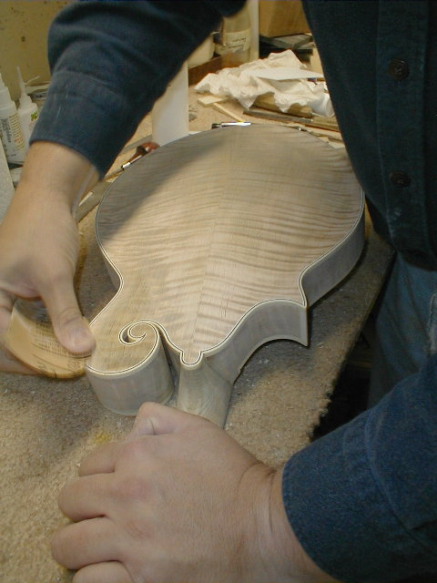
- 126) The finishing process begins. After sanding, I apply a wash coat of pottasium dichromate, an oxidizer that helps accentuate the figure in the wood. I apply the chemical, allow it to sit a few hours, then sand it back with 220 paper. This leaves the darker, oxidized areas in the "bottom" of the figure and a lighter area on "top".
- 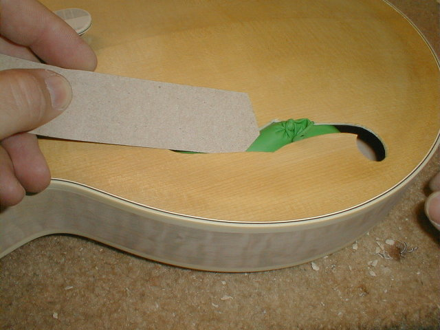
- 127) I only sand the dichromate back on the maple, leaving the spruce alone. I have to plug the F holes to keep finish out. I use a small ballon blown up thru F hole. A piece of cardboard is inserted between the ballon and the inside of the top.
- 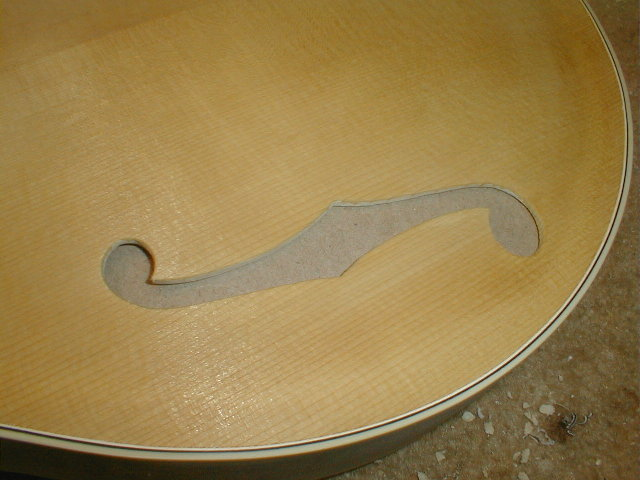
- 128) Here's the cardboard in place.
- 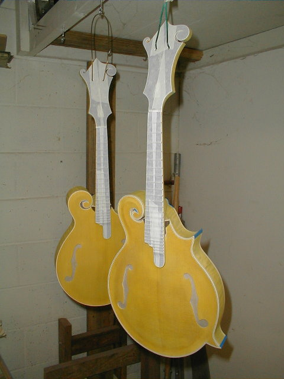
- 129) I've masked the fingerboards and pegheads prior to sunbursting. The first coat of stain, a yellow base coat, has been applied. Some of the initial colors are applied by hand. I've gotten a new dye lot of my maple stain, and it bears little resemblence to what I've used in the past. Since i use that stain in many of my mixtures, I had to spend a couple of days reformulating all of my colors. Matching colors is one of the most difficult things I do. As a result, I probably will offer only two or three color sunbursts in the future. It's just too time consuming trying to formulate new color schemes.
- 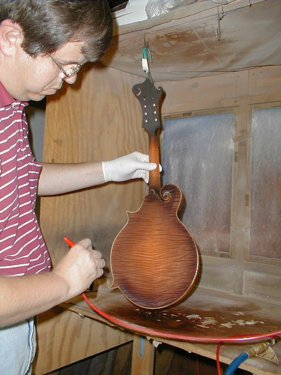
- 130)A maple stain was applied, then the sunburst is built up. For the darkest areas, I use an airbrush to achieve the color density I want. It looks terrible at this stage, but you can see how beautiful the wood is! With the stain going on the binding, and no finish on the instrument, you'd swear the stain was going to be too dark (not all has been applied in this photo). Once the binding is scraped clean, and the finish starts going on, the true color appears.

- 131) Scraping the binding..... it seems to take forever. Exactos, razor blades, or whatever gets the job done. It takes me about 6 hours to scrape an entire F-5. It really looks awful at this stage.
- 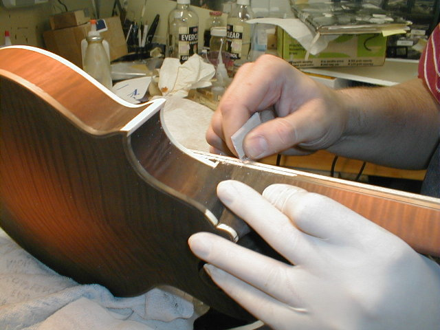
- 132) Using a razorblade on the fingerboard binding. You'll notice I'm wearing a latex glove on my left hand. That keeps the perspiration from leaving marks on the mandolin. It's a water soluble stain I use here, so moisture from my hands will cause problems.

- 133) The scraping is complete on these two. They look like ghosts at this stage. Pale, lifeless, but after a few coats of finish, you'll see quite a difference!
←
12345678910111213
→
© Lynn Dudenbostel, 2002.